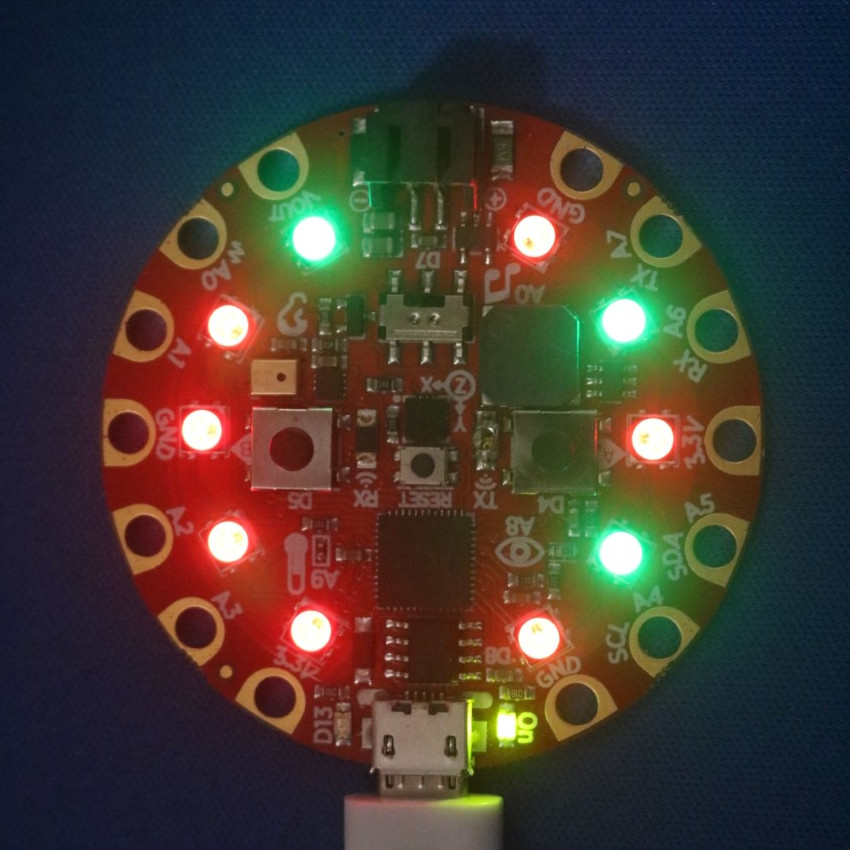

Here is the final product, displaying the answer to the meaning of life, the universe, and everything:
from adafruit_circuitplayground.express import cpx
ZERO = (30, 0, 0) # Set 0 bits to red
ONE = (0, 30, 0) # Set 1 bits to green
NUMBER = 42 # The decimal number being converted to binary
# Create a list of boolean values (True or False) using the bitwise and (&)
# of the NUMBER to be converted and the power of 2 represented by that pixel.
pixels = [bool(NUMBER & 2 ** i) for i in range(10)]
cpx.pixels.brightness = 0.3
while True:
# Set pixel at each pos to green if it is_one or red if not
for pos, is_one in enumerate(pixels):
cpx.pixels[pos] = ONE if is_one else ZERO
